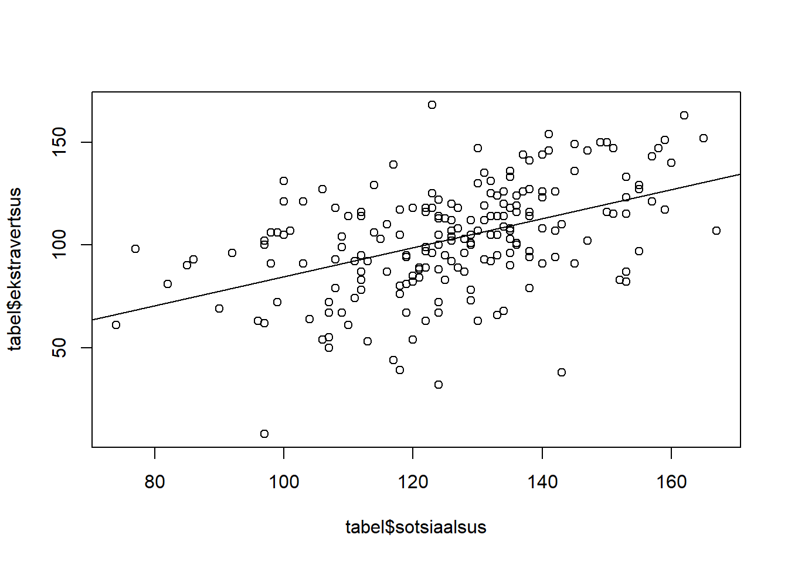
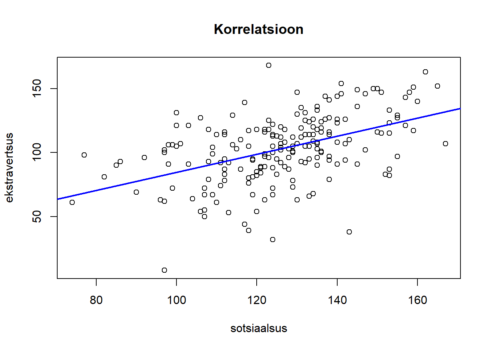

Funktsioonile cor() saame anda sisendiks terve tabeli. Allolevas näites olen sisendi määramisel kasutanud funktsiooni data.frame(). Selle abil saame muuta vektorid ühtseks andmestikuks (nt. võtame teisest tabelist muutujad ja teeme neist uue andmestiku). See lähenemine võimaldab arvutada korrelatsioone mitme muutuja vahel, mis asuvad tabelis üksteisest kaugel.
Järk-järgult
tabel_cor <- data.frame(tabel$avatus, tabel$ekstravertsus, tabel$neurootilisus) Nüüd on töökeskkonnas olemas objekt nimega tabel_cor. Selle objekti sisuks on tabel, millel on kolm veergu: avatus, ekstravertsus, neurootilisus.
Kasutan tabelil funktsiooni cor():
cor(tabel_cor)## tabel.avatus tabel.ekstravertsus tabel.neurootilisus
## tabel.avatus 1.0000000 0.46325180 0.28952552
## tabel.ekstravertsus 0.4632518 1.00000000 0.00672297
## tabel.neurootilisus 0.2895255 0.00672297 1.00000000Kõik ühel real
Saab kirjutada ka lühemalt:
cor(data.frame(tabel$avatus, tabel$ekstravertsus, tabel$neurootilisus)) # andsin funktsioonile cor() argumendiks uue andmestiku. data.frame(tabel$avatus, tabel$ekstravertsus, tabel$neurootilisus) - genereerib uue andmestiku, kus on 3 veergu: avatus, ekstravertsus, neurootilisus.## tabel.avatus tabel.ekstravertsus tabel.neurootilisus
## tabel.avatus 1.0000000 0.46325180 0.28952552
## tabel.ekstravertsus 0.4632518 1.00000000 0.00672297
## tabel.neurootilisus 0.2895255 0.00672297 1.00000000Funktsioon corr.test() psych paketis. See võimaldab võtta korrelatsiooni mitme muutuja vahel korraga. Seejuures annab ka infomratsiooni korrelatsioonide olulisuse kohta.
cor.test(tabel$sotsiaalsus, tabel$ekstravertsus)# saab kasutada kahete muutujat##
## Pearson's product-moment correlation
##
## data: tabel$sotsiaalsus and tabel$ekstravertsus
## t = 7.4918, df = 197, p-value = 2.239e-12
## alternative hypothesis: true correlation is not equal to 0
## 95 percent confidence interval:
## 0.3550503 0.5724810
## sample estimates:
## cor
## 0.470886# install.packages("psych")
library("psych") #nüüd saame kasutada paketi funktsioone
corr.test(tabel[,7:9])## Call:corr.test(x = tabel[, 7:9])
## Correlation matrix
## avatus depressioon traitanx
## avatus 1.00 -0.06 -0.08
## depressioon -0.06 1.00 0.66
## traitanx -0.08 0.66 1.00
## Sample Size
## [1] 200
## Probability values (Entries above the diagonal are adjusted for multiple tests.)
## avatus depressioon traitanx
## avatus 0.00 0.48 0.48
## depressioon 0.40 0.00 0.00
## traitanx 0.24 0.00 0.00
##
## To see confidence intervals of the correlations, print with the short=FALSE optionSaame anda ka sisendiks uue andmetabeli:
corr.test(data.frame(tabel$ekstravertsus,tabel$sotsiaalsus, tabel$avatus)) #teebe korrelatsioonitabeli## Call:corr.test(x = data.frame(tabel$ekstravertsus, tabel$sotsiaalsus,
## tabel$avatus))
## Correlation matrix
## tabel.ekstravertsus tabel.sotsiaalsus tabel.avatus
## tabel.ekstravertsus 1.00 0.47 0.46
## tabel.sotsiaalsus 0.47 1.00 0.42
## tabel.avatus 0.46 0.42 1.00
## Sample Size
## tabel.ekstravertsus tabel.sotsiaalsus tabel.avatus
## tabel.ekstravertsus 200 199 200
## tabel.sotsiaalsus 199 199 199
## tabel.avatus 200 199 200
## Probability values (Entries above the diagonal are adjusted for multiple tests.)
## tabel.ekstravertsus tabel.sotsiaalsus tabel.avatus
## tabel.ekstravertsus 0 0 0
## tabel.sotsiaalsus 0 0 0
## tabel.avatus 0 0 0
##
## To see confidence intervals of the correlations, print with the short=FALSE optionÜks lihtne viis, kuidas illustreerida seost kahe muutuja vahel:
plot(x = tabel$sotsiaalsus, y = tabel$ekstravertsus)
reg1 <- lm(tabel$ekstravertsus~tabel$sotsiaalsus)#arvutab regressioonisirge
abline(reg1)#lisme regressioonisirge eelnevale joonisele
Teeme joonise ilusamaks:
plot(x = tabel$sotsiaalsus, y = tabel$ekstravertsus, main ="Korrelatsioon", ylab = "ekstravertsus", xlab ="sotsiaalsus")
abline(reg1, col = "blue", lwd = 2)#lisme regressioonisirge eelnevale joonisele